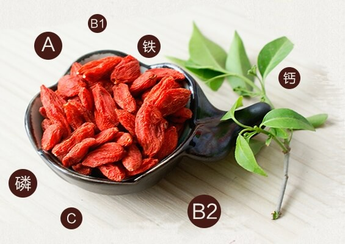

枸杞颜色鲜艳，味道甘甜，形似玛瑙。自古以来备受人们青睐。俗话说：“一年四季吃枸杞，人可与天地齐寿”。枸杞是一味很好的滋补品有多种食用方法。在民间常用其煮粥、熬膏、泡酒或同其他药物配伍。
枸杞全身是宝，明代李时珍《本草纲目》记载：“春采枸杞叶，名天精草;夏采花，名长生草;秋采子，名枸杞子;冬采根，名地骨皮”。枸杞的叶、花、根也是上等的美食补品。
现代医学研究表明，它含有胡萝卜素、甜菜碱、维生素A、维生素B1.维生素B2.维生素C和钙、磷、铁等，具有增加白细胞活性、促进肝细胞新生的药理作用，还可降血压、降血糖、血脂。
枸杞子自古就是滋补养人的上品，有延衰抗老的功效，所以又名“却老子”。枸杞中的维生素C含量比橙子高，β-胡萝卜素含量比胡萝卜高，铁含量比牛排还高。
枸杞所起到的壮阳功能令人喜出望外。
对于女性而言，常吃枸杞还可以起到美白养颜的功效。
枸杞性甘、平，归肝肾经，具有滋补肝肾，养肝明目的功效，常与熟地、菊花、山药、山萸肉等药同用。
枸杞全身都是宝，枸杞子能补虚生精，用来入药或泡茶、泡酒、炖汤，如能经常饮用，便可强身健体。
枸杞对体外癌细胞有明显的抑制作用，可用于防止癌细胞的扩散和增强人体的免疫功能。
枸杞虽然具有很好的滋补和治疗作用。任何滋补品都不要过量食用，枸杞也不例外。一般来说，健康的成年人每天吃20克左右的枸杞比较合适;如果想起到治疗的效果，每天最好吃30克左右。
枸杞要常吃，不可一次大量食用。用枸杞泡水或煲汤，只饮汤水并不能完全吸收，因为受水温、浸泡时间等因素影响，只有部分药用成分能释放到汤水中，为了更好地发挥效果，最好将汤里的枸杞也一起吃掉。不用任何加工，直接嚼服枸杞对营养成分的吸收会更充分，可将枸杞用水冲洗干净后嚼服，但服用量要减半。
由于枸杞温热身体效果明显，所以正在患感冒发烧、炎症、腹泻的人最好别吃;同时，枸杞还有兴奋性神经的作用，性欲亢进者不宜服用;另外，枸杞含糖量较高，每100克含糖19.3克，糖尿病者要慎用，不宜过量。